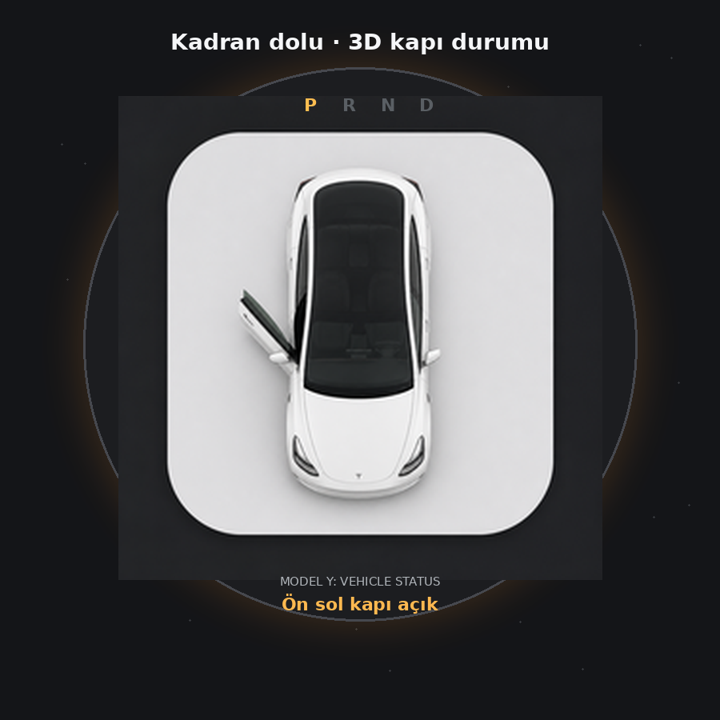
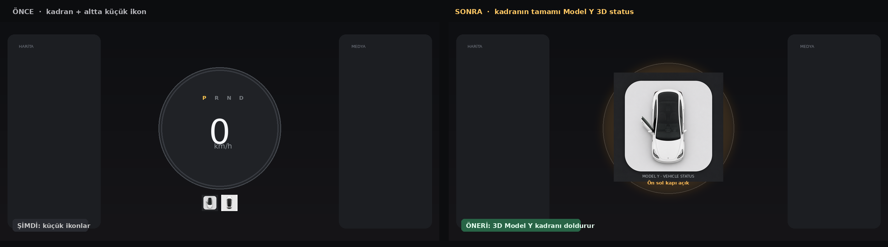
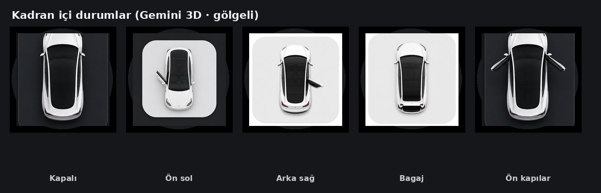

Gemini videosundaki gölgeli üstten bakış aynı asset’lerle kadranın içini doldurur. Hız / kW halkası gizlenir (araç duruyor). Altındaki küçük ikon şeridi kalkar.
Onaylarsan uygulamaya bu şekilde bağlarım.


